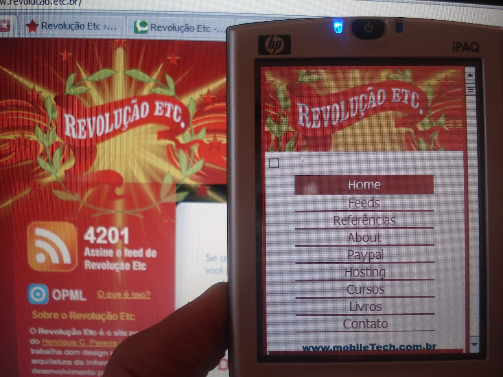

Seja bem vindo =)
 Olá, eu sou o Henrique e se você conhece essa logomarca você tá ficando velho (e eu também)! Trata-se da logomarca de um blog sobre front end e tecnologia que eu criei e mantive nos anos 2004 até 2012.
Trata-se a "era dos blogs" ou "blogosfera". Da época em que se questionou o trabalho dos jornalistas versus as coberturas de especialistas. A era do fim do Orkut e assenção do Facebook.
Fiz esse site responsivo pra entrar em forma nesses 2 anos de FIAP =)
Conto um pouco melhor um pouco da minha história aqui.
Estamos aqui, na atividade =)